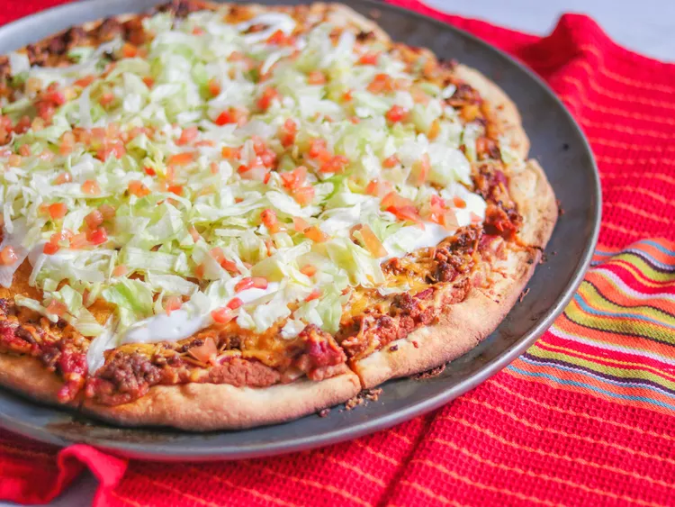

Home
Taco Pizza

Very Easy Very Tasty!
This is perfect for a nice summer meal. If you love tacos and you
love pizza then this combination is for you!
Ingredients
- 10 fluid ounces warm water
- 3/4 teaspoon salt
- 3 tablespoons vegetable oil
- 4 cups all-purpose flour
- 2 teaspoons active dry yeast
- 1 (6 ounce) can tomato paste
- 3/4 cup water
- 1 (1.25 ounce) package taco seasoning mix, divided
- 1 teaspoon chili powder, or to taste
- 1/2 teaspoon cayenne pepper, or to taste
- 1 (16 ounce) can fat-free refried beans
- 1/3 cup salsa
- 1/4 cup chopped onion
- 1/2 pound ground beef
- 4 cups shredded Cheddar cheese
Steps
- Add water, salt, oil, flour and yeast to your bread machine in the order listed.
Select the dough cycle. Check dough after it has been mixing for a few minutes.
If it is too dry and not mixing, add water, 1 tablespoon at a time, until it is mixing
and has a nice dough consistency. You want the dough to be pliable but not sticky.
- Meanwhile, in a small bowl, combine tomato paste, water, and 3/4 of the
package of taco seasoning mix. Stir in chili powder and cayenne pepper; set
aside. In another bowl, mix refried beans, salsa, and onion; set aside.
- Cook ground beef in a large skillet over medium heat until evenly brown; drain
excess fat. Season with the remaining 1/4 package of taco seasoning and a small
amount of water. Simmer for a few minutes, then remove from heat.
- Preheat the oven to 400 degrees F (200 degrees C).
- When the dough cycle is finished, remove dough from the machine. Divide
dough in half, and pat into two 12-inch pans. Spread a layer of bean mixture on
top of dough, then a layer of the tomato mixture. Sprinkle with seasoned beef
and top with Cheddar cheese.
- Bake in preheated oven until crust is golden brown and cheese is melted, about
15 minutes, turning pizzas halfway through baking.